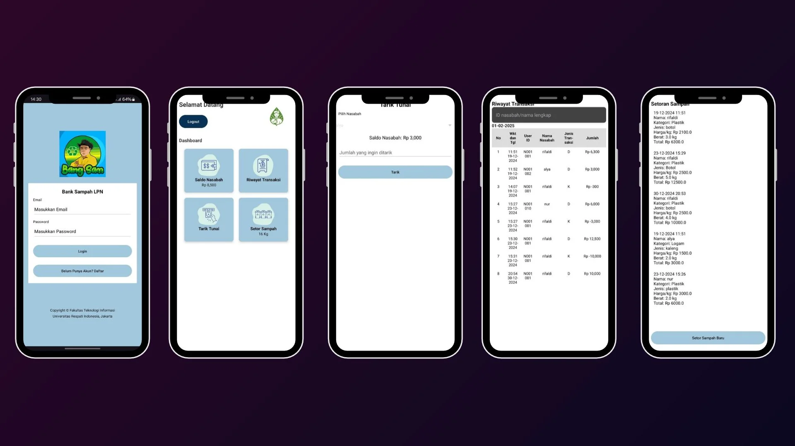

Aplikasi Bank Sampah Berbasis Android
Masalah
Pengelolaan tabungan sampah, pencatatan transaksi, dan jual beli sampah daur ulang masih berisiko dilakukan secara manual sehingga menyulitkan pemantauan saldo dan riwayat transaksi.
Solusi
Mengembangkan aplikasi Android untuk mengelola tabungan digital nasabah, mencatat transaksi sampah, memantau saldo, serta mendukung proses jual beli sampah daur ulang.
Hasil
Menghasilkan aplikasi yang membantu proses pencatatan tabungan, pengelolaan transaksi, dan pemantauan data nasabah secara lebih terstruktur.
Java
Android Studio
Firebase Authentication
Firebase Realtime Database